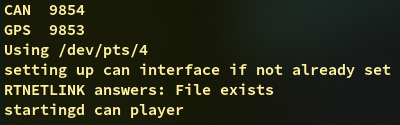

eagletrt-telemetry-simulator
EagleTRT telemetry simulator for GPS and CAN inputs.
This tool allows us to run, test and debug our telemetry, without the need of being physically near/connected to the car.
The simulator is composed of two parts:
GPS simulation
Simulates the beaviour of our ZED-F9P GPS form U-blox when plugged via USB and sending data via serial port. The data sent by the simulator come from a log registered in a previous session of testing.
This will make use of pseudoterminals.
CANbus simulation
The CANbus simulation is nothing more than a canplayer sending, as per the GPS case, a CAN log recorded during a previous testing session.
Usage
This simulator is intended to work as the real car sending data to the telemetry software, thus, it's required to run before the telemetry starts.
compile and run:
./compile.sh
./run.sh
will run the canplayer and the GPS simulator, once it starts some information will be displayed

- PIDs of the processes generating the input, these are here mainly for debugging purpose.
- third line will let us know if CAN was already set up or if device (can0) was already existig
- interface used, this is the interface the telemetry need to connect to in order to begin comunication trough the serial port, in this case
/dev/pts/4.
The reason why the telemetry service need to start after the simulator is that the interface used need to be specified in the config.json in /fenice-telemetria-sender/src.
"gps": {
"plugged": 1,
"simulated": 1,
"interface": "/dev/pts/4"
},
Also plugged and simulated ned to be set to 1.
From now on eveything can should work as always from the telemetry side.